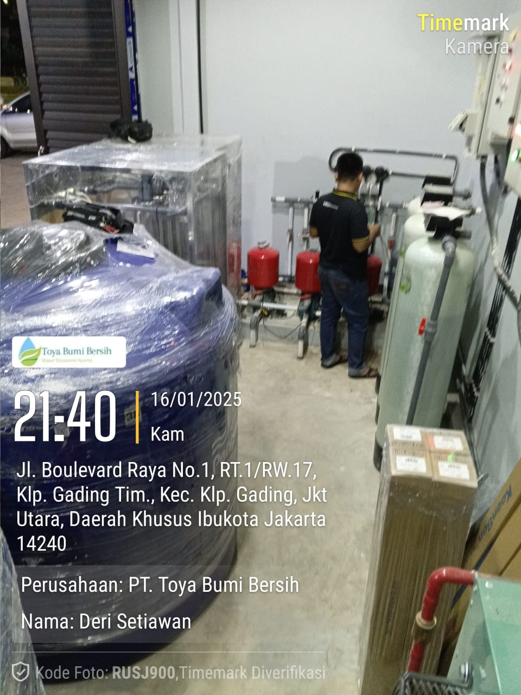

Ready to Drink

Ready to Drink Full Systems
Rangkaian sistem pengolahan air yang dirancang untuk menghasilkan air minum siap konsumsi langsung dari sumber air baku (air tanah, PDAM, atau sumber lainnya) dengan standar kualitas yang aman dan higienis.
Spesifikasi Umum
- Kapasitas: Custom (500 LPH – >10.000 LPH)
- Material: Food Grade Standard
- Sistem Operasi: Semi / Full Automatic
- Power Supply: 220V / 380V
Kualitas Output Air
- Jernih & tidak berbau
- Bebas bakteri & mikroorganisme
- TDS rendah
- Siap minum (drinkable water)